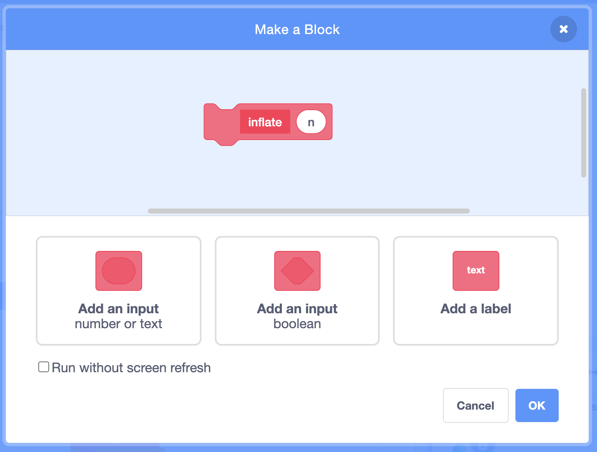
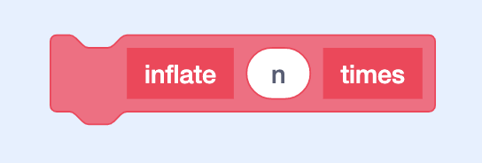
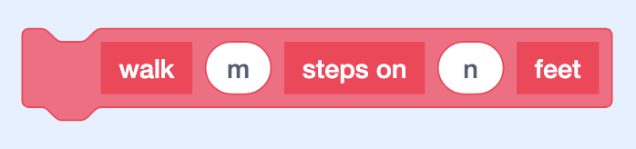

Abstraction
- So far, we’ve seen many features of Scratch, with blocks that let us add loops, variables, and conditions to our projects.
- Now, let’s think about how we might be able to improve upon the way that we’ve designed the blocks inside of our Scratch projects.
Dinosaur Game
- Let’s start by adding a dinosaur sprite to start building our Dinosaur Game example.
- We’ll add blocks so that it can move when the arrow keys are pressed:
when [up arrow v] key pressed change y by (10) when [down arrow v] key pressed change y by (-10) when [right arrow v] key pressed change x by (10) when [left arrow v] key pressed change x by (-10) - We’ll add another sprite, the star, and we can say that we’ve won the game when our dinosaur touches the star.
- Let’s tell our dinosaur to check if it’s touching the star after we’ve moved up:
when [up arrow v] key pressed change y by (10) if <touching (Star v) ?> then say (timer) for (2) seconds- Recall that the “if” block is under the Control section of blocks, and “touching?” block is under the Sensing section.
- We’ll also add a “say” block along with the “timer” variable, so that our dinosaur can tell us how long it took to find the star.
- But this doesn’t work if we reach the star after we pressed right to get to it.
- We want our dinosaur to check if we’ve reached the star no matter which key we used for it, so we need to right-click, or control-click, on the “if” block, and choose “Duplicate” to make a copy for each key:
when [up arrow v] key pressed change y by (10) if <touching (Star v) ?> then say (timer) for (2) seconds when [down arrow v] key pressed change y by (-10) if <touching (Star v) ?> then say (timer) for (2) seconds when [right arrow v] key pressed change x by (10) if <touching (Star v) ?> then say (timer) for (2) seconds when [left arrow v] key pressed change x by (-10) if <touching (Star v) ?> then say (timer) for (2) seconds - We’ll also add some code to our star so it moves to a random position every time the program is started:
when green flag clicked go to (random position v) - Now, we can use the arrow keys to move our dinosaur to the star, and every time it will tell us how long we took.
- It looks like the time is reported with decimals, like 9.70. So we can round this time to the nearest number of seconds, with the “round” block in the Operators section.
- But now, we’d have to drag the “round” block into the scripts for each of the four directions.
- When we’re copying a lot of code in our projects, it’s often the case that there’s a better solution.
- In this case, it turns out we can create a new block of our own, and refer back to it every time we need to.
- We’ll look in the section of blocks called “My Blocks”, and click “Make a Block” to make a new block. We’ll name this “check if won”, since that’s what we’re trying to do. Then, we’ll see this block appear:
define check if won- Now, we can add blocks underneath, that will run every time we use the “check if won” block.
- So we’ll take the condition and the “say” block, and move them to it:
define check if won if <touching (Star v) ?> then say (timer) for (2) seconds - And for our other scripts, we’ll drag out our own “check if won” block:
when [up arrow v] key pressed change y by (10) check if won when [down arrow v] key pressed change y by (-10) check if won when [right arrow v] key pressed change x by (10) check if won when [left arrow v] key pressed change x by (-10) check if won- Now, we’re using fewer blocks to achieve the same effect.
- If we wanted to round the value of the timer, we can change it just one place now, instead of four:
define check if won if <touching (Star v) ?> then say (round(timer)) for (2) seconds - The ability to create our own blocks will allow us to improve the overall design and readability of our projects.
Balloon
- Let’s add a balloon sprite for Balloon 1, and add blocks for it to inflate and deflate itself:
when green flag clicked set size to (50) % repeat (10) change size by (10) end wait (1) seconds repeat (10) change size by (-10) end- Our balloon will start at a size of 50%, increase its size by 10 ten times, wait a second, and then decrease its size by 10 (changing it by negative 10) ten times.
- But this code would require someone else to think about what the numbers and loops are doing, to understand what will happen. We can make our code easier to read by adding more blocks.
- We can make a new block called “inflate”, that will increase the size of our balloon by 10 ten times:
define inflate repeat (10) change size by (10) end - And we’ll make another block called “deflate”, that will decrease the size of our balloon:
define deflate repeat (10) change size by (-10) end - For the main script, we’ll use our new blocks:
when green flag clicked set size to (50) % inflate wait (1) seconds deflate- Note that our program does the exact same thing still, but the script under “when flag clicked” is easier to read.
- We can call these custom blocks abstractions, or taking more complex ideas or actions, and giving them a name that we can refer to and use over and over.
- We can give ourselves even more control in Balloon 2. Let’s right-click, or control-click, the “inflate” block we have, and choose “Edit”. Then, we’ll click “Add an input” to give this block the ability to accept some input, and we’ll call it “n”:

- “n” will be the name of the input, and since it will be some number, we can use “n” by convention.
- We’ll also click “Add a label”, and change that to say “times”, so our block will look like this:

- The label lets us add more words to describe what the block will do.
- Notice that our “define” block for “inflate” will show an “n” in an oval that we can use in our block below, so we’ll drag it into the “repeat” block:
define inflate (n) times repeat (n) change size by (10)- Now, “inflate” will increase the balloon’s size by 10 for “n” times.
- We’ll do this with deflate as well. Then, in our script for “when flag clicked”, we’ll need to type a number into each of our custom blocks:
when green flag clicked set size to (50) % inflate () times wait (1) seconds deflate () times- We can type in 10 so the balloon is inflated 10 times, or we can change that to 20, or any other value.
- By giving our functions the ability to take inputs, we can make them more flexible.
Walking Bear
- Let’s take a look at a function that can take multiple inputs in Walking Bear.
- We’ll add our bear sprite, and rename our costumes for the bear on four legs to “4”, and the costume for the bear on two legs “2”.
- Let’s make a new block called “walk”, and give it an input called “m”. We’ll add a label “steps on”, and then another input, “n”. Finally, we’ll add another label, “feet”:

- We could call the inputs anything we’d like, but we’ll use “m” and “n”.
- What we want this block to do is to make our bear walk “m” steps on “n” feet, so we’ll define it as:
define walk (m) steps on (n) feet switch costume to (n) repeat (m) move (1) steps- We’ll first switch our costume to “n”, and then move 1 step “m” times.
- Now, in our main script, we can tell our bear to walk any number of steps, on two or four feet:
when green flag clicked walk (30) steps on (4) feet walk (30) steps on (2) feet- Notice that it’s easier to understand what our bear will do when the flag is clicked. And we’ve saved ourselves from having to repeat multiple blocks over and over again.
- With our own custom blocks, we can define complex behaviors that we can reuse and keep our project better organized.